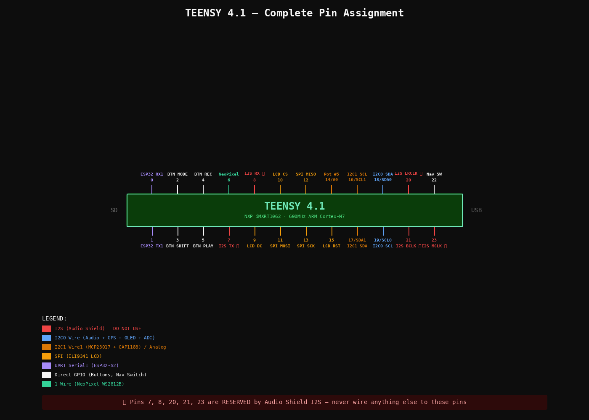
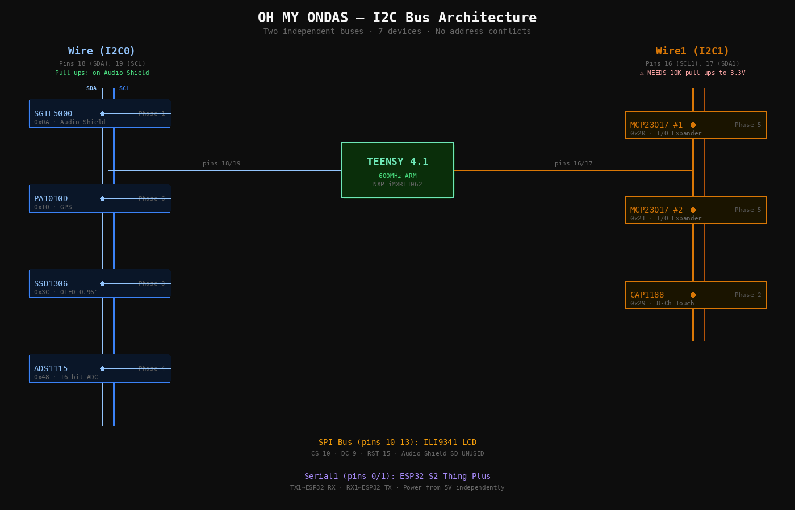
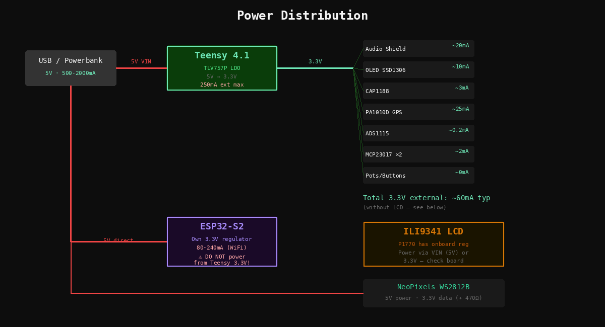

Assembly Manual
Oh My Ondas Hardware Prototype — March 2026 — Barcelona

TEENSY 4.1 — COMPLETE PIN ASSIGNMENT — Pins 7, 8, 20, 21, 23 RESERVED by Audio Shield I2S
Before You Start
Confirm these counts. If anything is short, note it before beginning.
- Slide pots 45mm (P4272): ordered 5 — confirm you have 5
- Wire Kit 22AWG (P3174): check Adafruit box
- Helping Third Hand (P291): check Adafruit box
Key Decisions
- Use Teensy built-in SD (SanDisk Ultra 32GB). Audio Shield SD slot unused.
- LCD is 2.8″ ILI9341 (P1770) — DMA-optimized ILI9341_t3 library.
- Dual I2C: Wire (18/19) audio-path, Wire1 (16/17) UI-polling.
- 4 main buttons direct to Teensy pins for latency + interrupts.
- ESP32-S2 powered from 5V, not Teensy 3.3V.
Tools
Soldering station 48W, solder 1mm, flux, 2× breadboard, jumper wires, helping hand, micro-USB cable, 3.5mm headphones.
Animated: Teensy + Audio Shield stack — 7 steps
- Cut 2× female 40-pin headers to 14 pins each.
- Place through Audio Shield bottom-side holes.
- Stack onto Teensy as alignment jig.
- Solder while seated. Let cool. Separate.
- Format as FAT32 (not exFAT).
- Copy PJRC test WAV files to root.
- Insert into Teensy built-in slot (not Audio Shield slot).
- Teensy into breadboard (spans center gap).
- Audio Shield on top via headers.
- Headphones into Audio Shield 3.5mm jack.
- USB to computer.
#define SDCARD_CS_PIN BUILTIN_SDCARD
// DO NOT use pins 10/7/14 for SD
// Those are Audio Shield SD (unused)Open WavFilePlayer example. Set CS pin as above. Upload. Serial Monitor 9600 baud.
Animated: CAP1188 wiring + touch pads — 6 steps
| CAP1188 Pin | Teensy Pin | Notes |
|---|---|---|
| SDA | 17 (SDA1) | Wire1 bus |
| SCL | 16 (SCL1) | Wire1 bus |
| VIN | 3.3V | |
| GND | GND |
Cut 8 pieces of copper tape (~20×20mm). Stick on cardboard in 2×4 grid, 5mm spacing. Solder wire to each. Connect to C1–C8.
Wire1.begin();
Adafruit_CAP1188 cap = Adafruit_CAP1188();
cap.begin(0x29, &Wire1); // I2C1 at 0x29Serial Monitor: touch each pad → see event. Then integrate: pad N triggers sample N via AudioPlaySdWav.
Animated: OLED + LCD + NeoPixels wiring — 5 steps
| OLED Pin | Teensy Pin | Bus |
|---|---|---|
| SDA | 18 (SDA0) | Wire — shared with Audio Shield |
| SCL | 19 (SCL0) | Wire |
| VCC | 3.3V | |
| GND | GND |
I2C scan on Wire should show: 0x0A (SGTL5000) + 0x3C (SSD1306).
| LCD Pin | Teensy Pin | Notes |
|---|---|---|
| CLK | 13 (SCK) | SPI clock |
| MOSI | 11 | SPI data out |
| MISO | 12 | SPI data in |
| CS | 10 | Chip select |
| DC | 9 | Data/Command |
| RST | 15 | Reset (NOT pin 8!) |
| LITE | 3.3V | Backlight always on |
Data → pin 6 via 470Ω series resistor. VCC → 5V. GND → GND.
Animated: ADS1115 + Slide Faders wiring — 5 steps
| ADS1115 Pin | Teensy Pin | Notes |
|---|---|---|
| SDA | 18 (SDA0) | Shared I2C0 bus |
| SCL | 19 (SCL0) | |
| VDD | 3.3V | |
| GND | GND | |
| ADDR | GND | Sets address to 0x48 |
Each pot: Left → GND, Right → 3.3V, Wiper → ADS1115 A0–A3. Pot 5 wiper → Teensy pin 14 (A0).
Add 100nF ceramic cap from each wiper to GND, close to the ADC input.
Adafruit_ADS1115 ads;
ads.begin(0x48, &Wire);
// ads.readADC_SingleEnded(0) ... sweep 0 to ~26000If jumpy: check 100nF caps, keep wiper wires away from SPI lines.
Animated: Buttons + MCP23017 + Encoders + Nav — 5 steps
| Button | Teensy Pin | Wiring |
|---|---|---|
| MODE | 2 | Button between pin and GND, INPUT_PULLUP |
| SHIFT | 3 | Same |
| REC | 4 | Same |
| PLAY | 5 | Same — Pressed=LOW, Released=HIGH |
Watch the notch — pin 1 at the notch end. Both on I2C1 (16/17). #1 at 0x20 (A0/A1/A2 = GND). #2 at 0x21 (A0 = 3.3V). RESET pins → 3.3V. 100nF cap on each VDD–VSS.
Each EC11: C (common) → GND, A + B → MCP GPIO, SW → MCP GPIO. Enable MCP internal pull-ups in firmware. 5 encoders on MCP#1, 2 on MCP#2.
Common → GND. Up/Down/Left/Right/Select → MCP#2 GPIOs. Internal pull-ups.
Animated: PA1010D GPS wiring — 4 steps
| PA1010D Pin | Teensy Pin | Notes |
|---|---|---|
| SDA | 18 (SDA0) | Shared I2C0 |
| SCL | 19 (SCL0) | |
| VIN | 3.3V | |
| GND | GND |
Adafruit_GPS GPS(&Wire);
GPS.begin(0x10);
GPS.sendCommand(PMTK_SET_NMEA_OUTPUT_RMCGGA);
GPS.sendCommand(PMTK_SET_NMEA_UPDATE_1HZ);Animated: ESP32-S2 UART link — 4 steps
Flash WiFi test via its own USB port before wiring to Teensy. Verify it connects to your network.
| ESP32 Pin | Teensy Pin | Notes |
|---|---|---|
| TX | 0 (RX1) | ESP32 sends → Teensy receives |
| RX | 1 (TX1) | Teensy sends → ESP32 receives |
| 5V / VBUS | VIN | Shared 5V from USB |
| GND | GND |
// Teensy:
Serial1.begin(115200);
if (Serial1.available()) {
String msg = Serial1.readStringUntil('\n');
Serial.print("From ESP32: ");
Serial.println(msg);
}Animated: Integration checklist — 12 checks

I2C BUS ARCHITECTURE — Wire (audio-path) and Wire1 (UI-polling, external pull-ups required)

POWER DISTRIBUTION — USB 5V → Teensy LDO 3.3V (~60mA external) + ESP32-S2 (own regulator)
Bus Map — Final State
Wire — I2C0
Wire1 — I2C1
SPI
Audio Shield SD NOT used — Teensy SDIO instead
UART — Serial1
Next Diotronic Visit
- 2.2KΩ resistors ×4 — replace 10K I2C1 pull-ups with proper values
- 1KΩ resistors ×5 — RC filter series resistors for slide pots
- 470Ω resistor ×1 — NeoPixel data line (check your assortment first)
- EC11 rotary encoders ×6 — complete the 13-encoder interface
Parts Set Aside
- KB2040 (P5302) — RP2040 keyboard MCU
- RFM95W LoRa (P3072) — 900MHz radio, future device-to-device
- USB-C Plug + Vertical Port (P5978, P5993) — enclosure phase
- Backup Teensy 4.1 + Audio Shield — in the drawer